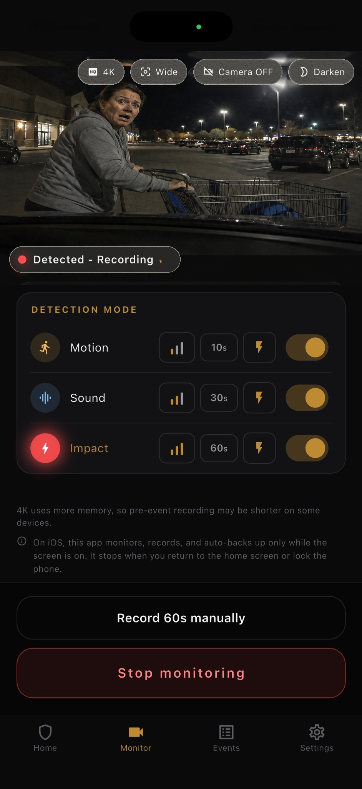

Capture the trigger
Motion, sound, and impact detection help catch the start of a parking-lot incident.
Hit-and-run evidence
When a parked car is struck and the other driver leaves, the useful question is simple: do you have a clip or frame that shows what happened? Parking Guard is built for that evidence gap.

Motion, sound, and impact detection help catch the start of a parking-lot incident.
Clips include video from before detection plus 10, 30, or 60 seconds after it.
Evidence is saved on the phone first, with optional backup to your own Google Drive.
For a parking lot hit-and-run, the strongest evidence is usually not a long surveillance recording. It is a clear moment: the vehicle approaching, the contact, the direction of travel, and any readable plate, vehicle color, or face.
Parking Guard focuses on that moment. The app keeps a short rolling buffer while monitoring, then saves a clip around motion, sound, or impact so you can review the incident instead of searching hours of footage.
Place a spare phone inside the car with a view toward the most likely contact area. Start monitoring before you leave. If motion, sound, or impact is detected, Parking Guard saves a local video clip and a still frame from the trigger moment.
The recording includes 3 seconds before detection and a selectable 10, 30, or 60 seconds after detection. If another trigger happens while recording, the clip can extend into one event up to 60 seconds.
Aim the phone through a window toward the space beside or behind your car. The goal is not a cinematic view; it is a stable angle where a plate, person, cart, or vehicle body is readable.
Use 1080p when possible for a good balance of detail and load. On supported iPhones, 4K can help with distance, but it uses more memory and may shorten pre-event recording on some devices.
No app can guarantee that every hit-and-run will be detected, recorded, or accepted by an insurer. Lighting, window reflections, camera angle, battery, heat, storage, and operating-system limits all matter.
On iOS, monitoring works only while the app stays open and the screen remains on. Android can continue through a foreground service, depending on device permissions and system conditions.
FAQ
Short answers, with the same limits the app shows in its main product page.
It can help capture evidence when motion, sound, or impact is detected, but it cannot guarantee every incident will be detected or readable.
Yes. Evidence is saved locally first. Google Drive backup is optional and uses your own Drive account.
No. Parking Guard is a spare-phone evidence app. Dedicated dash cams may be better for always-on overnight use.